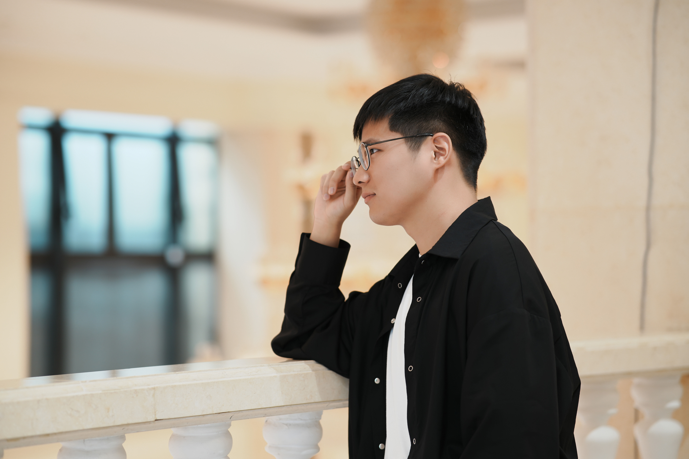
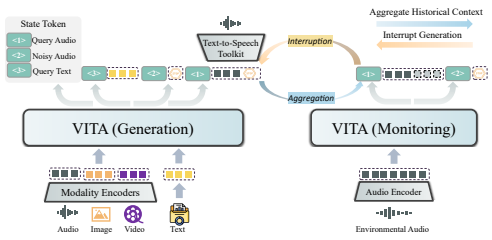
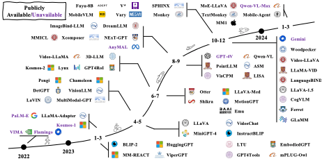
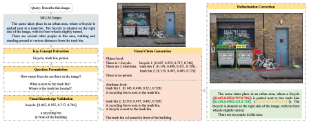
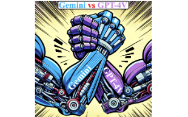
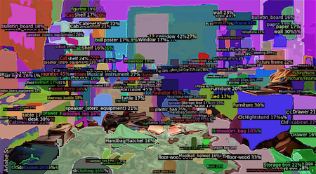
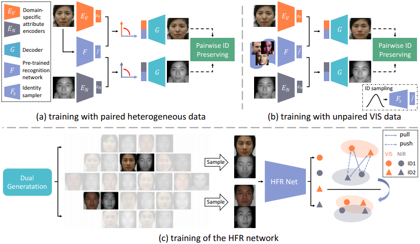
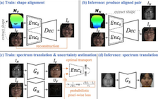
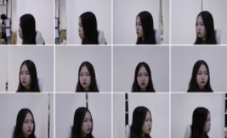
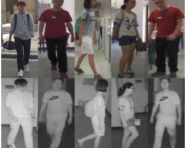

|  |
Chaoyou Fu
|
Biography
I am an Assistant Professor at Nanjing University, under the leadership of Prof. Caifeng Shan, Prof. Ran He, and Prof. Tieniu Tan. Before that, I was a Senior Researcher at Tencent Youtu Lab, engaged in academic research and engineering landing works as a Technology & Project Leader, from 2022 to 2024. I obtained my Ph.D. degree from NLPR-CASIA in 2022, under the supervision of Prof. Ran He.
My current research interests mainly focus on Multimodal LLM, LLM, and biometrics.
We are looking for self-motivated PhD and Master candidates! If you are interested, please feel free to contact me. Meanwhile, I am open to any discussion or collaboration.
Selected Publications
|  |
VITA: Towards Open-Source Interactive Omni Multimodal LLM |
|
Video-MME: The First-Ever Comprehensive Evaluation Benchmark of Multi-modal LLMs in Video Analysis |
 |
MME: A Comprehensive Evaluation Benchmark for Multimodal Large Language Models |
|  |
A Survey on Multimodal Large Language Models |
|  |
Woodpecker: Hallucination Correction for Multimodal Large Language Models |
|  |
A Challenger to GPT-4V? Early Explorations of Gemini in Visual Expertise |
|  |
APE: Aligning and Prompting Everything All at Once for Universal Visual Perception |
|  |
DVG-Face: Dual Variational Generation for Heterogeneous Face Recognition |
|  |
Towards Lightweight Pixel-Wise Hallucination for Heterogeneous Face Recognition |
|  |
High Fidelity Face Manipulation with Extreme Poses and Expressions |
|  |
CM-NAS: Cross-Modality Neural Architecture Search for Visible-Infrared Person Re-Identification |
Academic Services
Conference Reviewer: NeurIPS, ICLR, ICML, CVPR, ICCV, ECCV, AAAI, ACM MM, IJCAI
Journal Reviewer: IEEE TIP, PR
Honors and Awards
[2023.12] 北京市优秀博士学位论文
[2023.08] 中国科学院优秀博士学位论文
[2023.07] IEEE Biometrics Council Best Doctoral Dissertation Award
[2023.07] CVPR 2023 Outstanding Reviewer (232/7000+)
[2022.07] 中国科学院院长特别奖
[2022.07] 北京市优秀毕业生
[2021.12] 2022年“腾讯技术大咖”计划-T10
[2021.12] 2022年“阿里星”计划-P7
[2021.12] 博士研究生国家奖学金
[2021.11] 宝钢奖学金优秀学生奖
[2019.12] 硕士研究生国家奖学金
[2017.06] 安徽省优秀毕业生
[2015.11] 本科生国家奖学金
[2015.08] “飞思卡尔”杯全国大学生智能汽车竞赛全国总决赛二等奖